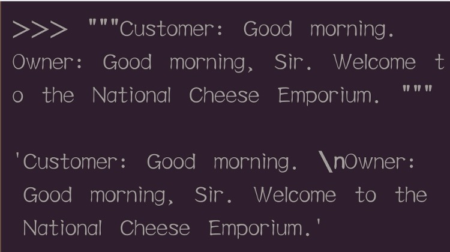
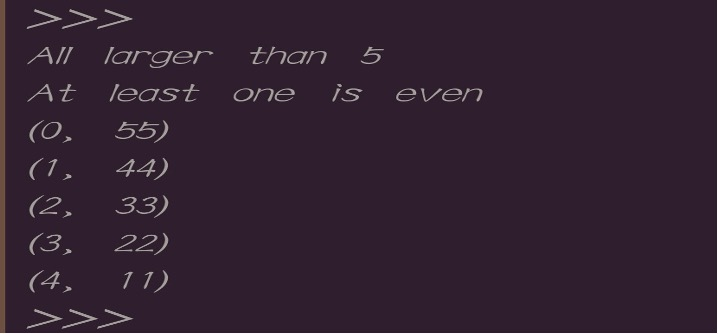
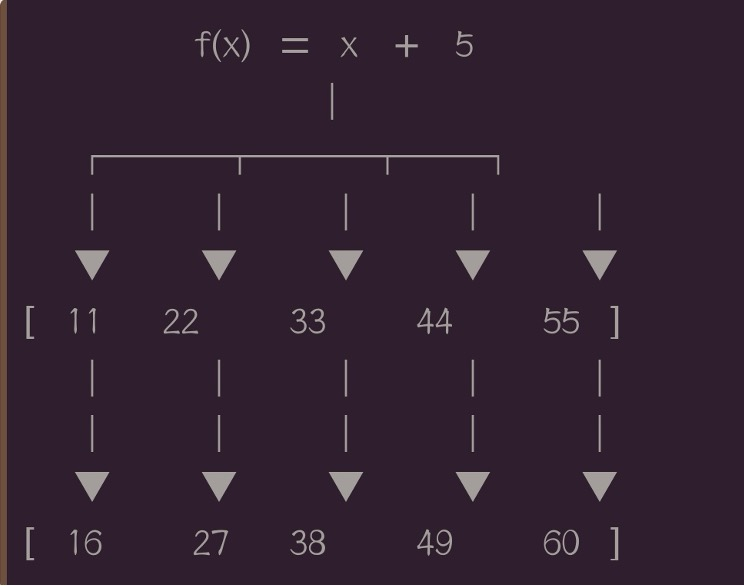
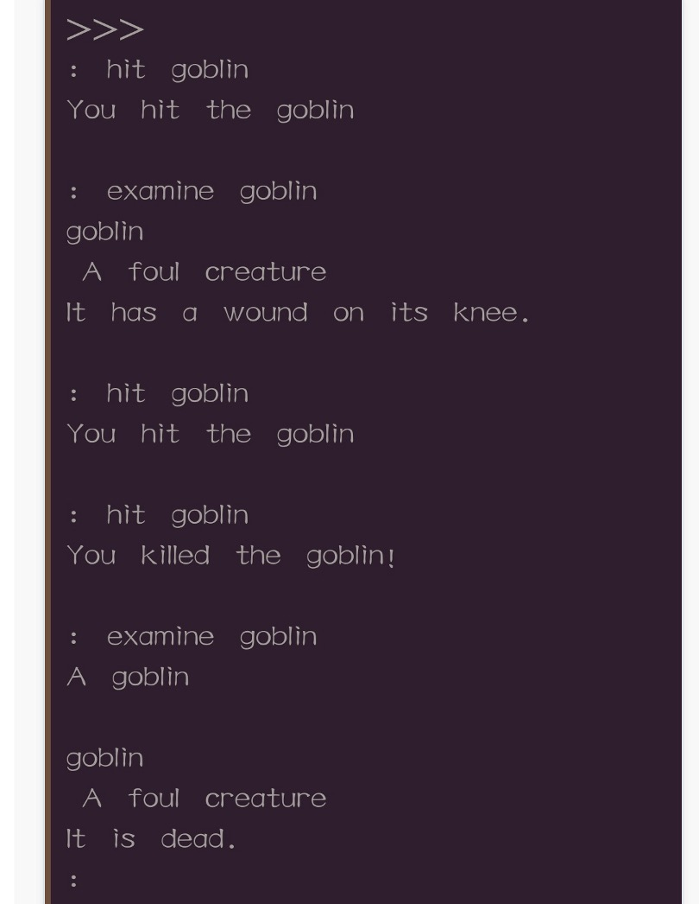

基础概念
适用于网站编程，脚本编程，科学计算和最近非常热门的AI。
Python是解释型语言，程序不需要编译，程序在运行时才翻译成机器语言并执行。
第一个程序：
1 | Print（“Hello world！”） |
和C语言的printf不一样！！！
简单运算符
Python有加（+）减（-）运算符，乘法（*）和除法（/）运算符。
- 注意：使用除法在Python中会产生一个十进制浮点数。
- Python同样可以进行负数运算。在数字前面加一个减号即可。
- 和数学一样，除数不能为0.
浮点
在Python中浮点表示非整数，例如：3.14和-1.23432432
- 浮点数可以用除法和小数来创建。
- 小数点后第二位开始的最右边0将被忽略，例如：0.500000会显示0.5，但15.0还是会显示15.0 。
- Python最多能表示小数位后16位，大于16位的数将被忽略。
- 两整数相除为浮点数；两个浮点数运算或整数和浮点数运算都被处理成浮点。
- 浮点数和整数运算中，Python自动把整数转换成浮点，这是Python规则的一部分。
算术运算符
幂乘
幂乘也叫乘法。即n个相同乘数的乘积运算。
实例：
1 | 2 ** 5 |
结果为
1 | 32 （即2的5次方为32） |
幂乘运算符用 ** 表示。
商和余数
在Python中使用除后取整运算符和取余运算符来做商和余数的运算。
- 除后取整运算符用// 来表示，取余运算符用% 来表示。
实例：
1 | 20 // 6 |
结果：
1 | 3 |
实例2：
1 | 1.25%0.5 |
结果：
1 | 0.25 |
字符串
字符串
类似于C 语言中的string，Python中字符串就是一串字符。
- 字符串是以单引号 ‘’ 或双引号 “” 括起来的任意文本，所有引号内的空间，如空格与制表符，都将按照原样保留。
- 字符串是不可变的。
转义字符
有些字符不能直接包含在字符串中，如单引号不能直接放置在用单引号表示的string对象里。会使Python无法识别哪儿是字符串的开始，哪儿是结束。
- 通过转义字符反斜杠 \ 可以处理这种问题，
- 其他必须转义的常见的字符串有：换行符、制表符、反斜杠。
实例：
1 | ‘I\’m a boy !’ |
结果：
1 | I‘m a boy ! |
- 反斜杠也可用于转义制表符，任意Unicode字符以及其他无法可靠打印的内容，这些字符称为转义字符。
换行
和C语言一样，换行符为“\n”.
使用三个双引号或单引号创建的字符串保留原始的输入状态，在其里面的回车被自动转义为 \n 。
在三个引号表示的字符串中不需要转义字符，可以在字符串里自由的使用单引号与双引号，就像正常的输入一样，回车键在输出力也被 \n 转义符自动转义。

输入和输出
输出
使用print 函数来生成输出，将在屏幕上显示其文本表现形式。
- 当输出字符串对象时，生成字符串对象的引号不会被显示。
输入
要从Python 用户获得输入，可以使用input函数，
实例:
1 | print(input("Enter something please:")) |
运行结果：
输出所输入的值。
字符串运算符
字符串连接
- 使用加号 + 将两个字符串连接在一起。
- 即使字符串包含数字，他们仍然是以字符串形式连接在一起。
- 字符串和数字相加会产生错误，他们是两个不同的对象。
实例：
1 | “2” + “2” |
运行结果：
1 | ’22’ |
字符串运算符
- 字符串可以乘以整数，将产生新的字符串，结果是原始字符串的重复倍数，字符串和整数的顺序不重要。
实例1:
1 | print("spam" * 3) |
运行结果：
1 | spamspamspam |
- 除了乘以整数外，字符串不能与其他字符串相乘，字符串也不能乘以浮点数。
类型转换
类型转换
和C语言类似，可以使用类型转换来强制转换，eg使用 int 函数来转换字符串到整数。
在Python中，目前学过的基本类型整数、浮点数、字符串，用于转换为这些函数分别为： int、float、str。
类型转换的另一个例子是将用户输入（即字符串）转换为数字（整数或浮点数）。
实例1:
1 | print(float(input("Enter a number:")) + float(input("Enter another number:"))) |
运行结果：
1 | Enter another number:23 |
变量
变量
变量在Python中是非常重要的概念。变量就是一个有值的代号，变量允许通过将值赋值给名称，该名称可用于引用后面定义的值。
赋值语句的作用就是创建一个新的变量，并且赋值给这个变量。赋值语句用等号 = 分割，左边是变量，右边是该变量的值。
实例：
1 | x = 7 |
运算结果：
1 | 7 |
可以使用变量来执行相应的操作，就像对数字和字符串所做的那样。
在python 中变量只是一个指向，可以多次重新更改它们的值。这种变量本身类型不固定的语言称之为动态语言，与之对应的是静态语言。
变量没有特定的类型，可以将字符串分配给变量，然后再讲整数赋值给同一个变量。
Python是弱类型语言，变量没有特定的类型，其它强类型语言的变量是不能从一个类型的赋值转到给另一个类型赋值。
实例1:
1 | x = 7 |
运行结果：
1 | 7 |
变量名必须为大小写英文、数字和_ 的组合，不能用数字开头。
变量不能是Python 里面的关键字
Python是一种区分大小写的编程语言。
任何试图引用未分配的变量都会导致错误。
可以使用del 语句删除变量，这意味着名称和值的引用都被删除.
实例2
1 | foo = "a string " |
运行结果：
1 | a string |
实例3
1 | foo = input("Enter a number: ") |
运行结果:
1 | Enter a number: 7 |
原地修改运算符
原地修改运算符
原地修改运算符就是用于修改自身的运算符。我们可以把 x = x + 3 写成 x+=3.
还包含 -= *= /= %=
原地修改运算符可以用来修改数字，也可用来修改字符串。
许多其他语言都有特殊的运算符，例如 “++x” 作为 “x +=1” 的快捷方式，但是Python没有这些运算符
Python中整数是一种不可变类型，因此，无法实现自增和自减操作。
控制结构
布尔比较
Python中布尔类型（Boolean）包含两个值：True 和False。
- 两种方式可以声明数据类型是布尔型。一种直接声明，另一种通过值比较产生。
- 注意赋值运算符 = 和等于比较运算符== 是不同的。
比较
不等于运算符为 ！=
大于 > 小于 <
大于或等于 >= 小于或等于 <=大于或小于运算符也可以用于按字母顺序比较字符串（单词的字母顺序是基于其组成的字母顺序）
If语句
If条件判断
空白区在Python中十分重要。被称为缩进（indentation）。在逻辑行的开头留下空白区（使用空格或制表符）用以确定各逻辑行的缩进级别，而后者又可用于确定语句的分组。
- 放置在一起的语句必须拥有相同的缩进。每一组这样的语句被称为块（block）。
- If格式在写程序时注意不要忘记冒号 ：
实例：
1 | if 10 > 5: |
运算结果;
1 | 10 greater than 5 |
- 注意if 声明中的比较运算表达式要用冒号来结束。
- 如果程序包含多行代码，应该将其创建一个文件并保存代码。在命令行下使用Python on filename来运行它。
- If语句里面可以嵌套更多的if 语句。
else 语句
- 如果一个包含else 语句的 if条件判断，当if 条件的判断值为 false 时，运行 else里的语句。
- 像if 语句一样， else语句的代码也必须缩进。
- Else 语句也必须像if 语句一样后面跟着冒号： 。
实例1:
1 | x = 4 |
运算结果;
1 | No |
elif 语句
elif 语句是 else if 的缩写，主要用于多重判断的语句。
- If elif 多重判断语句最后可以放置 else 语句，当前面 if elif 多重判断语句最终无法在所有的分支上得出结果为True情况下，程序运行 else 语句。
- If 语句执行有个特点，是从上往下判断，如果在某个判断上是True，把该判断对应的语句执行后，就忽略剩下的elif和else 语句。
实例2
1 | num = 7 |
运行结果：
1 | Number is 7 |
布尔逻辑判断
布尔逻辑判断用于为依赖于多个条件的if 语句创造更复杂的条件。
- Python布尔逻辑运算符包含：and or 和not。
- Python使用三个单词作为布尔逻辑运算符，其他语言使用&& || 和 ！
实例1:
1 | print(1 == 1 and 2 ==2) |
运算结果：
1 | True |
or运算符
or运算符评估其运算符两边的结果，如果其中有一边运算的结果为TRUE则返回 True，如果两边的结果都为false，返回false。
not运算符
not 运算符值评估其右边的运算结果并返回相反的结果。not TRUE返回false，not false返回TRUE。
- 可以在if 判断里使用多个布尔逻辑运算符来处理多个条件判断。运算结果：
1
2print(not 1 == 1)
print(not 1 > 7)1
2False
True
运算优先级
- == 运算符的优先级高于 or 运算符。
- Python的运算顺序于普通数学的顺序相同：首先是括号，然后是指数，然后是乘除法，然后加减法。
下面的表格表示Python里由高到低的运算优先级。
| 运算符 | 描述 |
|---|---|
| ** | 指数（最高优先级） |
| ～+- | 按位反转，一元加号和减号（最后两个的方法名为+@和-@） |
| */% // | 乘、除、取模和取整除 |
| +- | 加减法 |
| >> << | 右移，左移运算符 |
| & | 位 ‘AND’ |
| ^| | 位运算符 |
| <= < > >= | 比较运算符 |
| <>== != | 等于运算符 |
| = %= /= //= -= += *= **= | 赋值运算符 |
| is is not | 身份运算符 |
| in not in | 成员运算符 |
| not or and | 逻辑运算符 |
While 循环
和C语言的while功能一样，使用格式见下面的程序例子：
实例1:
1 | i = 1 |
运算结果：
1 | 1 |
- While 如果条件判断一直未TRUE，可以是死循环。
- 如果需要在代码中跳出while循环，可以使用break语句。当在循环中遇到break语句，循环立即跳出while循环语句。
实例2
1 | i = 0 |
运算结果：
1 | 0 |
- 在循环外面使用break 语句将会导致错误发生。
Continue语句
循环里面我们还可以使用continue语句。
- 不像break跳出整个循环并停止执行循环代码块，continue语句停止执行循环代码块下面的部分并重新开始执行循环代码块。
- Continue语句的作用是停止当前的循环并执行下一个循环。
- 在循环外面使用continue语句将会导致错误发生。
实例3
1 | i = 0 |
运行结果：
1 | 1 |
列表
列表是一种保存一系列有序的集合，类似于C 语言的数组。
- 需要把数据放在方括号里并让每一项都用逗号隔开，使用列表中的索引来访问列表中的特定项。
- 索引的第一项为0 不是 1，这和我们生活中实际情况有点不一样。
实例1:
1 | words = ["Hello", "world", "!"] |
运算结果：
1 | Hello |
- 一个空列表是用一个空的方括号创建的。
- 大多数情况下，逗号不会出现在列表中的最后一项的后面，当然在那里放置一个逗号也是完全有效的语法。
- 通常列表包含单重类型，但也可以包含几种不同的类型。同时，列表里也能嵌套列表。
- 内嵌列表通常用于表示一个二维数组，因为Python缺少在其他语言中用于这种作用的多维数组。
实例2
1 | number = 3 |
运行结果：
1 | 1 |
列表运算符
列表里的列表元素可修改
1 | nums = [7, 7, 7, 7, 7] |
运算结果;
1 | [7, 7, 5, 7, 7] |
加号 + 运算符可以吧列表拼接在一起，星号 * 运算符可以将列表重复指定的次数。
列表和字符串在很多方面的行为都是相似的，字符串可以看作是不能更改的字符列表。
实例3
1 | nums = [7, 7, 7, 7, 7] |
运算结果:
1 | [7, 7, 7, 7, 7, 4, 5, 6] |
- 要检查一个元素是不是在列表里，可以使用in 运算符。返回 True 表示该元素存在，否则返回 false。
- In 运算符还可以用于确定字符串是否是另一个字符串的子字符串。
实例4
1 | words = ["spam", "egg", "spam", "sausage"] |
运行结果：
1 | True |
- 要检查一个元素不在列表里使用 not 运算符。
列表方法
- 要在列表尾部添加一个元素可以使用列表的append方法。
- 列表后面加点是因为它是列表类的一种方法，类方法将在后面的课上解释。
实例1:
1 | nums =[1, 2, 3] |
运算结果;
1 | [1, 2, 3, 4] |
- 取得列表的长度，使用len函数。
- 与append不同，len是一个正常函数，而不是列表类的一个方法。运行结果：
1
2nums = [1, 3, 5, 2, 4]
print(len(nums))1
5
- 想将对象插入列表还可以使用insert 方法，不像append方法，它可以分配这个对象插入到哪个索引。
实例2
1 | words = ["Python", "fun"] |
运行结果;
1 | ['Python', 'is', 'fun'] |
- Index 方法被用于在发现对象在哪个索引编号，返回首次发现的索引编号，如果列表里没有对象跑出 ValueError错误。
实例3
1 | letters = ['p', 'q', 'r', 's', 'p', 'u'] |
运行结果：
1 | 2 |
range 函数
- Range 函数创建一个包含顺序数字的对象，下面的代码创建一个从0 到小于10 的列表。
实例1:
1 | numbers = list(range(10)) |
运行结果：
1 | [0, 1, 2, 3, 4, 5, 6, 7, 8, 9] |
- 上面的代码调用了list方法强制类型转换。因为range函数本身会创建range对象，如果要将其作为一个列表使用，则必须将其转换为列表。
- Range函数接受一个参数是 ，它创建一个从0 到小于参数的一个有序序列。
- 如果接受两个参数，它创建一个从第一个参数开始到小于第二个参数的一个序列。
实例2
1 | numbers = list(range(3,10)) |
运行结果:
1 | [3, 4, 5, 6, 7, 8, 9] |
- range 函数默认每次产生有序序列式迭是对序列尾数加 1 操作，但是如果其有第三个参数，那么产生数字序列相加的数就以第三个数为准。即第三个是步长。
实例3
1 | numbers = list(range(3,10,2)) |
运行结果：
1 | [3, 5, 7, 9] |
for循环
遍历
遍历一个列表中所有元素可以通过一个while循环和一个计数器变量来完成。
实例1:
1 | words = ["hello", "world", "spam", "eggs"] |
运行结果：
1 | hello! |
- 上面示例遍历列表中所有项，使用索引编号访问它们，并添加感叹号来打印它们。
- 上面的用while的循环来遍历列表有点太麻烦，Python提供了一个更简便的方法，也是最常用的方法就是for循环。
实例2
1 | words = ["hello", "world", "spam", "eggs"] |
运行结果：
1 | hello! |
- Python里的for 循环像其它语言中的foreach 循环。
- For循环用于重复某些代码一定次数，通过将 for 循环与 range 对象结合起来用。
- 在for循环中使用range对象时，不需要调用list函数。因为不需要被索引，所以不需要将它转换成列表。
实例3
1 | for i in range(5): |
运行结果;
1 | hello! |
函数和模块
代码重用
- 在软件工程里，必须遵守不要编写同一代码的原则。英文 Don’t Repeat Yourself，简称：DRY原则。
- 重复的代码被认为是遵循WET原则，即表示英语Write Everything Twice 的简写，或者 We Enjoy Typing的简写。
函数
函数调用就是左边是需要调用的函数的名称，后面跟着圆括号。
- 括号前面的单词是函数名，括号内以逗号分隔的值是函数参数。
实例1:
1 | print("Hello world!") |
函数
函数
- 函数可以通过关键字 def 来定义，关键字后跟着一个函数的标识符，接下来是一对圆括号，圆括号里可以包括一些变量的名称。再以冒号结尾结束这一行。后面缩进的语句块是函数的一部分
- 所有函数的代码块是通过缩进来定义的，函数命名后面要跟随冒号。
实例1:
下面代码声明一个叫my_func的函数。当调用这个函数时打印spam三次。
1 | def my_func() : |
运行结果：
1 | spam |
- 函数调用必须在函数声明之后。如果调用在声明前，程序发生异常。
函数参数
参数
函数名后面的括号是空的，意思是这个函数不需要参数，实际上，大多数函数都是有参数的。
- 参数定义在圆括号里面。
实例1:
1 | def my_func(word) : |
运行结果：
1 | spam! |
- 同样，可以定义一个包含多个参数的函数，参数用逗号分隔开。
1 | def my_func(x, y) : |
运行结果：
1 | 13 |
函数参数可以用作函数块定义中的变量，仅在函数体内部存在，不能在函数定义之外引用它们，同样这也适用于在函数中创建的其他变量。
- 从技术上讲，参数是函数定义中的变量，参数的值在调用时被函数赋值了。
实例2
1 | def function(variable): |
运算结果：
1 | 8 |
函数返回值
我们见到一些内置函数比如float 都返回一个值。要返回一个值，在函数体内部可以用return 随时返回函数结果。
- Return语句不能在函数外面使用，函数执行完毕没有return语句时，函数自动产生return None。
实例1:
1 | def max(x, y): |
运行结果：
1 | 7 |
- 当从函数返回一个值，程序立即停止执行并返回，return 下面的代码不会执行。
实例2
1 | def add_numbers(x, y): |
运行结果：
1 | 9 |
备注和文档解释
备注
注释是代码的注解，用于使代码更容易理解，它们不影响代码的运行方式。
Python中，注释是通过插入哈希符号 # 来实现的，改行在 # 之后的所有文本都被程序忽略。
Python没有多行注释，其它编程语言有多行注释功能，使用 /* */语法。
文档注释
文档注释有点和注释相同，因为它们是用来解释代码的。
通过在函数或类的第一行下面放置一个包含多行字符串方式来创建的。
- 文档注释是字符串的另一种表现，运行时会被保留在程序或类里并能被用 _doc_变量读到。
- 文档注释一般给类和函数做注释，而单行注释一般用来说明某一行的功能。
实例1:
1 | def shout(word): |
运行结果：
1 | spam! |
函数即对象
函数
虽然他们的创建和普通变量不同，但函数就像任何其他类型的值一样，可以将他们重新分配给变量，然后对引用调用。
实例1:
1 | def multiply (x, y): |
运行结果：
1 | 28 |
上面的例子将乘法函数重新指派了一个变量名，现在我们可以用变量名来调用函数。
- 函数还可以被当做参数来调用。
实例1:
1 | def add(x, y ): |
运行结果：
1 | 30 |
上面的例子函数add被函数 do_twice 当成参数并在函数体里面调用。
模块
模块（modules）是为完成常见任务而编写的代码，例如生成随机数，执行数学操作等。
- 模块的好处是大大提高了代码的可维护性。其次，编写代码不必从零开始。当一个模块编写完毕，就可以被其他地方引用。使用模块还可以避免函数名和变量名冲突。
- 使用模块的基本方法是在代码的顶部添加import module_name 代码，然后使用模块module_name .var 访问模块中的变量名称的函数和值。
实例1:
1 | import random |
运行结果：
1 | 3 |
上面diamante使用random 模块中定义的randint 函数在1 到 6 的范围内打印5 个随机数。
如果仅需要模块中的某些函数，可以使用另一种导入模块的方法。
采用 from module_name import var 的方式导入函数var后就可以使用var，就好像它是在代码中定义的一样。
使用逗号分隔列表可以导入多个函数。
- 表示从模块中导入所有的函数，比如： from math import *
通常不鼓励这么做，因为它混淆了代码中的变量和外部模块中的变量。
实例2
1 | from math import pi |
运行结果：
1 | 3.141592653589793 |
实例3
1 | from math import pi,sqrt |
- 可以使用as 关键字以不同的命名来导入模块或对象，这可以用在模块或对象有一个长的或令人困惑的名称时。
实例4
1 | from math import sqrt as square_root |
运行结果：
1 | 10.0 |
标准库和pip（不熟悉）
- Python中有三种主要类型的模块：
自己编写的模块、从外部源安装的模块以及与Python一起预装的模块。 - 预装的模块叫做标准库，包含一些常用的模块，标准库里包含的模块包括：
- String , re, datetime , math ,random, os , multiprocessing, subprocess,
Socket, email json doctest unittest pdb argparse sys 等。
标准库可以完成的任务包括字符串解析、数据序列化、测试、调试和操作日期、电子邮件、命令行参数等。
- Python的标准库拥有大量模块，这是他作为一种语言的主要优势之一。
标准库
完整的标准库文档可以访问www.python.org 上面有英语、法语和日语版本。
模块
在Python中安装第三方模块是通过pip这个工具完成的，此工具随着Python安装程序安装到机器中，要安装的一个库，转到命令行（对于Windows，它将是命令提示符）。输入
1 | pip install library_name |
。安装完成后就可以导入library_name这个模块并使用了。
使用pip这个工具是在大多数操作系统上安装第三方库的标准方法，有些库已经为Windows预先构建了二进制文件，这些是普通的可以执行文件，也可以是使用GUI安装库，就像安装其他程序一样。
例外和文件
异常
异常也叫例外。当程序出现意外情况时就会发生异常并终止运行。
- 除数为0 产生 ZeroDivisionError 异常；
- ImportError : 引入模块错误，通常是模块不存在。
- IndexError： 读取列表超出索引范围。
- NameError： 使用未声明的变量。
- SyntaxError： 代码语法错误。
- TypeError： 当操作或函数处理不合适类型。
- ValueError： 内建操作或函数，接收到类型正确，但值不正确。
Python 还有其他几个内置的异常，比如ZeroDivisionError 和OSError。第三方库也经常定义自己的例外。
异常处理
我们使用 try / except 语句捕捉程序运行产生的例外。
用 try 块用来包含可能产生异常的代码块。如果产生异常 try 块停止运行， except块里的代码开始运行，如果程序运行正常，则不会运行except 块里的代码。
实例1:
1 | try: |
运行结果：
1 | An error occurred |
- Try 语句可以拥有多个except定义语句来处理异常，多个异常也可以使用一个except块来捕捉。
实例2
1 | try: |
运行结果：
1 | Error occurred |
- Except 语句如果没有申明要捕捉的例外，将捕获所有的例外。应该谨慎地使用这种异常处理方式，它可以捕获意外错误但却隐藏了编程错误。
实例3
1 | try: |
运行结果：
1 | An error occurred |
这种异常处理方式通常用在处理用户输入。
finally语句
- 假设正在读取一份文件，应该如何确保文件对象被正确关闭，无论是否会有异常发生。
- 为了确保代码最终能够运行一些代码不论是否有例外发生，我们可以使用finally语句。
- finally语句放在 try /except 语句的后面
实例1:
1 | try: |
运行结果：
1 | Hello |
- finally语句最终会被运行不管前面的例外有没有捕捉到，或者在except语句里产生了例外。
实例2
1 | try: |
运行结果：
1 | 1 |
抛出异常
抛出异常
使用raise语句抛出一个异常。
- 需要声明要抛出的例外名称。
实例1:
1 | print(1) |
运行结果：
1 | 1 |
- 抛出的异常可以用参数来指出这是什么错误。
实例2
1 | name = "123" |
运行结果：
1 | NameError: Invaild name! |
- 在except 块里，raise语句可以不用声明异常的名称重新抛出捕获到的异常。
实例3
1 | try: |
运行结果:
1 | An error occurred |
断言
断言
- Python的断言就是检测一个条件。如果条件为真，他什么都不做。反之它触发一个错误信息。
- 断言可以打开或关闭。断言使用assert语句声明。
- 程序员通常在函数的开头放置断言以检查有效的输入，在函数调用之后放置断言以检查有效的输出。
- 断言可以在运行时通过添加 –O 或 –OO选项来关闭。
实例1:
1 | print(1) |
运行结果：
1 | 1 |
- 断言的第二个参数可以用来给AssertionError做参数。
- AssertionError异常可以像任何其他异常一样使用 try /except 语句被捕获和处理，如果程序不处理，这种类型的异常将终止程序的运行。
实例2
1 | temp = -10 |
运行结果：
1 | AssertionError: Colder than do solute zero! |
打开文件
打开文件
读写文件是最常见的IO（输入输出）操作。Python内置了读写文件的函数，要读写文件需要打开一个文件对象，使用open函数。
- Open 函数打开的对象在Python中统称为file-like Object.。除了文件外，还可以是内存的字节流，网络流，自定义流等等。
1
myfile = open("filename.text")
- Open函数的参数是文件的路径。如果文件与程序位于同一个目录中，则可以不用指定路径直接使用文件名。
- 可以使用open函数的第二个参数来指定打开文件的模式。
- 使用“W”模式时，如果文件已经存在，会把旧文件的内容全部都清除掉。
实例1:
1 | # write mode |
访问模式列表：
| 访问模式 | 说明 |
|---|---|
| r | 以只读方式打开文件，文件的指针将会放在文件的开头，这是默认模式 |
| w | 打开一个文件只用于写入。如果该文件已存在则将其覆盖。如果该文件不存在，创建新文件。 |
| a | 打开一个文件用户追加。如果该文件已经存在，文件指针将会放在文件的结尾。也就是说，新的内容将会被写入到已有的内容之后，如果该文件不存在，创建新文件进行写入。 |
| rb | 以二进制格式打开一个文件用于只读。文件指针将会放在文件的开头。这是默认模式。 |
| wb | 以二进制格式打开一个文件只用于写入。如果该文件已存在则将其覆盖。如果该文件不存在，创建新文件。 |
| ab | 以二进制格式打开一个文件用于追加。如果该文件已存在，文件指针将会放在文件的结尾。也就是说，新的内容将会被写入到已有内容之后，如果该文件不存在，创建新文件进行写入。 |
| r+ | 打开一个文件用于读写，文件指针将会放在文件的开头 |
| w+ | 打开一个文件用于读写，如果该文件已存在则将其覆盖。如果该文件不存在，创建新的文件。 |
| a+ | 打开一个文件用于读写，如果该文件已存在，文件指针将会放在文件的结尾。文件打开时会是追加模式。如果该文件不存在，创建新文件用于读写。 |
| rb+ | 以二进制格式打开一个文件用于读写，文件指针将会放在文件的开头。 |
| wb+ | 以二进制格式打开一个文件用于读写，如果该文件已存在则将其覆盖，如果该文件不存在，创建新文件。 |
| ab+ | 以二进制格式打开一个文件用于追加，如果该文件已存在，文件指针将会放在文件的结尾，如果该文件不存在，创建新文件用于读写。 |
- 文件打开后应该使用close 方法关闭文件。
实例2
1 | file = open("filename.txt", "w") |
读取文件
- 使用open方法打开的文件可以使用read方法来读取内容。
- 打印文件名为filename.txt的所有内容。
实例1:
1 | file = open("filename.txt", "r") |
- 若要读取一定数量的文件内容，可以使用一个数字作为参数来调用read函数，该数字确定要读取多少个字节的内容。
- 可以对同一个文件对象进行多次的read调用，逐字节读取文件内容。在没有参数的情况下，read函数返回文件的其余部分。
实例2
1 | file = open("filename.txt", "r") |
当所有的内容被读取后，再调用read函数返回空字符串。
1
2
3
4
5
6file = open("filename.txt", "r")
file.read()
print("Re-reading")
print(file.read())
print("Finished")
file.close()运行结果：
1
2
3Re-reading
Finished要一行一行地读取，我们可以使用readline 方法。也是用readlines 一次读取所有内容并返回一个列表。列表里的每项元素表示一行内容。
在输出中，返回的行包含换行符，打印print 函数在输出的末尾自动添加新行。
实例1:
1 | file = open("filename.txt", "r") |
运行结果：
1 | [] |
- 使用for语句遍历文件的每一行：
1
2
3
4
5file = open("filename.txt", "r")
for line in file:
print(line)
file.close()
写文件
- 使用write方法吧内容写到文件里。
- 如果文件不存在，“w”模式将会创建一个文件。
实例1:
1 | file = open("filename.txt", "w") |
运行结果：
1 | This has been written to a file |
- 写入模式下，如果文件存在将清除全部内容并往文件里写入新内容。
- 文件将被新内容重写。
实例2
1 | file = open("filename.txt", "r") |
运行结果：
1 | Reading initial contents |
- 如果write 写入成功，方法返回写入的字节数。
实例3
1 | msg = "Hello world!" |
运算结果;
1 | 12 |
读写文件
- 确保文件在使用后始终关闭，避免浪费资源是良好的编程习惯。使用try /finally 语句。
- 当例外发生时也能确保文件对象被正确关闭。
实例1:
1 | try: |
运行结果：
1 | Some new text |
- 每次都这样要关闭文件实在太繁琐。所以，Python引入了with语句来帮助我们自动调用close方法。
- 使用with 语句打开文件是个好习惯，就算有例外发生，with语句也会自动帮我们关闭文件句柄。
实例2
1 | with open("filename.txt") as f: |
运算结果：
1 | Some new text |
数据类型（不熟练）
None类型
- None类型是Python的特殊类型，是None Type的对象类型，表示无值。该对象只有一个值None。其它语言使用null来表示这种对象。
- 它不支持任何运算也没有任何内建方法。作为一个对象其布尔值值为false。除了和自己比较，None和任何其他的数据类型比较永远返回False。
- 如果函数没有清楚地声明返回值，则返回None对象。
实例1:
1 | def some_func(): |
运行结果：
1 | Hi! |
字典
字典（Dictionaries）是Python中一个非常有用的内置数据类型。它不像列表一样通过数字索引来访问，字典当中的元素是通过键来存取。
字典是一种映射类型，在其他语言中被称为map。 字典用{ } 来标识，使用键：值（key:value）存储，具有极快的查找速度，使用 [ ]语法来访问。
实例1:
1 | ages = {"Dave": 24, "Mary": 42, "John": 58 } |
运行结果：
1 | 24 |
访问不存在词典里的键值会导致KeyError例外。
实际上字典能够存储任何类型的数据。
字典为空时的表现形式为 { }
只有不可变的对象可以用作字典的key，不可变的对象是指那些不能更改的对象。到目前为止，我们遇到的唯一可变对象就是列表和字典。可变对象做键值会触发TypeError例外。
正确使用字典非常重要，需要牢记的第一条就是字典的key必须是不可变对象。
实例1:
1 | bad_dict = { [1, 2, 3] : "one two three", } |
运行结果：
1 | TypeError: unhashable type: 'list' |
字典方法
字典
- 我们知道字典是可变对象，可以像列表一样，字典的键值存储的数据可以重新指派另外的值。
- 不同于列表的是，可以通过字典的键值存储数据，不管这个键存不存在字典里。
实例1:
1 | squares = {1: 1, 2: 4, 3: "error", 4: 16,} |
运行结果：
1 | {1: 1, 2: 4, 3: 9, 4: 16, 8: 64} |
- 要在字典里确定一个键是否存在字典里，你可以使用in 语法。
实例2
1 | nums = { |
运行结果：
1 | True |
- 还可以通过get 的方法从字典里取得数据，就像前面课程里 ages[“Dave”]这样的方式读取数据。与这种方式不同的是，当字典里没有该键值时 get 方法取回的值是None，而不是引发 KeyError例外。
- 还可以指定get 方法第二个参数，当键值在字典里不存在时返回的默认值。
实例3
1 | pairs = { 1: "apple", |
运行结果：
1 | [2, 3, 4] |
元组
- 元组很像列表，但是元组不能体用列表类能够提供给你的很多功能。元组的一大特征不可变的。
- 元组使用圆括号创建。
实例1:
1 | words = ("spam", "eggs", "sausages",) |
- 可以像访问列表一样，通过索引来访问元组。
实例2
1 | print(words[0]) |
给元组重新分配值会触发TypeError例外。
和列表字典一样，元组也能嵌套存储。
我们也可以不用圆括号就创建元组，通过逗号分割来确定元素的分组。
空元组必须通过圆括号创建。
尽管元组不能改变，但是运算速度快鱼列表。
实例3
1 | my_tuple = "one", "two", "three" |
运行结果：
1 | One |
实例4空元组
1 | tpl = () |
列表切片
列表切片
- Python为勒边提供了高级特性切片（Slice）操作功能，大大简化了获取一个列表区间的操作。切片操作通过两个索引数字中间用冒号分割来完成，返回从第一个数字索引到第二个数字索引的一个新列表。
- 和range函数操作一样，包含第一个数字索引里的值，不包含第二个数字索引的值。
实例1:
1 | squares = [0, 1, 4, 9, 16, 25, 36, 49, 64, 81] |
运行结果：
1 | [4, 9, 16, 25] |
- 如果切片的第一个数字忽略，切片操作从0开始，如果切片的第二个数字缺失，切片操作直到列表尾部结束。
- 切片操作同样作用于元组。
实例2
1 | squares = [0, 1, 4, 9, 16, 25, 36, 49, 64, 81] |
运行结果：
1 | [4, 9, 16, 25, 36, 49, 64, 81] |
- 列表切片操作同样可以提供第三个参数，这一参数将被视为切片的步长（Step），在默认情况下，步长大小为 1.
实例3
1 | squares = [0, 1, 4, 9, 16, 25, 36, 49, 64, 81] |
运行结果：
1 | [0, 4, 16, 36, 64] |
- 索引操作也可以使用负数，在这种情况下，位置计数将从列表的末尾开始。
- 如果步进使用负值，则切片操作将从后向前执行。
- 使用[ ::-1]切片是一种常见的方法来反转列表。
实例4
1 | squares = [0, 1, 4, 9, 16, 25, 36, 49, 64, 81] |
运行结果：
1 | [1, 4, 9, 16, 25, 36, 49, 64] |
列表生成式
- 列表生成式即List Comprehensions，是Python内置的非常强大却简单的可以用来创建列表的生成式。
实例1:
1 | # a list comprehension |
运算结果：
1 | [0, 1, 8, 27, 64] |
- 列表生成式同样可以包含if条件判断，一遍创建一个符合一定条件的列表。
实例2
1 | evens = [i ** 2 for i in range(10) if i**2 %2 ==0] |
运算结果：
1 | [0, 4, 16, 36, 64] |
- 通过列表生成式生成一个非常大的列表会引发MemoryError异常。
- 这个问题我们通过迭代器来解决这个问题。
字符串格式化
字符串格式化
我们经常会输出类似“亲爱的xxx你好！你XX月的话费是xx”之类的字符串，而xx的内容是根据变量变化的。
- 所以，需要一种简便的格式化字符串的方式，string 对象提供了一个format的方法。
- 每一个参数对应字符串里相应的占位符{ }。使用数字的方式不仅可以交换参数的位置，甚至可以在字符串里面换位，比如{ 2 }在最前面。
实例1:
1 | # string formatting |
运行结果：
1 | Numbers:4 5 6 |
- 字符串格式化也可以用命名参数替换。
实例2
1 | a = "{x}, {y}".format(x=5, y=12) |
运行结果：
1 | 5, 12 |
- Python还提供了另外一种格式化的方法。这种格式化方式和C语言是一致的用 % 实现，
实例3
1 | s = 'Hello, %s' % 'world' |
运算结果：
1 | Hello, world |
- % 运算符就是用来格式化字符串的，下图是常见的占位符。
| 格式 | 符号转换 |
|---|---|
| %c | 字符 |
| %s | 通过str()字符串转换来格式化 |
| %i | 有符号十进制整数 |
| %d | 有符号十进制整数 |
| %u | 无符号十进制整数 |
| %o | 八进制整数 |
| %x | 十六进制整数（小写字母） |
| %X | 十进制整数（大写字母） |
| %e | 索引符号（小写‘e’） |
| %E | 索引符号（大写’E’） |
| %f | 浮点实数 |
| %g | %f和%e的简写 |
| %G | %f和%E的简写 |
- 在字符串内部，%s 表示用字符串替换，%d表示用整数替换，有几个%？占位符，
后面就跟几个变量或者值，顺序需要对应好。如果只有一个%？，括号可以省略。
常见方法
字符串方法
- Python标准库内建一些常用的方法。
| 字符 | 说明 |
|---|---|
| Join | 用一个字符串作为分隔符连接字符串列表。 |
| Replace | 对字符串进行替换操作。 |
| Startswith | 字符串是否以另一个字符串开头。 |
| Endswith | 字符串是否以另一个字符串结束。 |
| Upper 和lower | 返回字符串以大写或小写的形式。 |
| Split | 切割字符串为列表。 |
实例1:
1 | print(",".jion(["spam", "eggs", "ham"])) |
数学方法
Max 和min 查找一组数里最大和最小的值。
Abs 绝对值
Round 四舍五入
Sum 数字列表里数字的总和。
实例2
1 | print(min(1, 2, 3, 4, 0, 2, 1)) |
列表方法
- 标准库提供了一些非常有用的函数，all和any 函数为我们队列表进行条件判断提供了方便。函数 enumerate 也提供了另一种方式来遍历列表的方法。
实例3
1 | nums = [55, 44, 33, 22, 11] |
运行结果：

文本分析
例子：
分析文件里每个字母出现的百分比，首先我们打开一个文件并读取内容。
实例1:
1 | filename = input("Enter a filename:") |
运行结果：
1 | Enter a filename: filename.txt |
实例2:统计一个字母出现在文件的百分比
1 | def count_char(text, char): |
运行结果：
1 | Enter a filename:filename.txt |
函数式编程（陌生）
函数式编程
函数式编程
函数式（Functional Programming）式一种以函数为基础的编程风格。
- 函数编程的一个关键部分是高阶函数，高阶函数英文叫Higher-order function,在关于函数作为对象的一课中，我们简单地看到了这个想法的例子。高阶函数接受其他函数作为参数，甚至允许将函数作为结果返回。
- 一个函数可以接收另一个函数作为参数，这种函数就称之为高阶函数，函数式编程就是这种高度抽象的编程范式。
实例1:
1 | def apply_twice (func, arg): |
运行结果：
1 | 20 |
纯函数
- 纯粹的函数式编程语言编写的函数没有变量，因此，任意一个函数，只要输入时确定的，输出就是确定的，这种纯函数称之为没有副作用。
- 非纯函数是因为返回的 结果是不固定的，上面的代码改变了列表some_list.。
- 纯函数的优缺点：
- 容易推理和测试；
- 能够并行运算
- 更有效率。一旦对输入的函数进行求值，对于给定的参数结果都是固定的，既可以存储起来并在下次需要该函数时引用，从而减少调用该函数的次数。这叫记忆化（memolzation）。
- 使用纯函数的主要缺点是：它们使得IO的简单任务复杂化，这种任务本身就需要副作用，在一些情况下，纯函数可能更难编写。
匿名函数
- 我们学到的编写函数的方式是使用def 来创建函数，并指派一个def定义的变量名来调用。
- 在有些时候，不需要显式地定义函数，如果函数是使用lambada语法创建的，这种方式创建的函数称为“匿名函数”
- 该方法在不需要显式地定义函数时最常用。它由lambda关键字、参数列表、冒号、要计算和返回的表达式组成。
- Lambda演算是Alonzo Chruch给出的一套图灵机等价的形式计算系统。Lambda演算系统的精妙之处在于处理递归，lambda演算也叫λ演算。
实例1:
1 | def my_func(f, arg): |
运行结果：
1 | 0 |
- 匿名函数也是一个函数对象，也可以把匿名函数赋值给一个变量，再利用边浪来调用该函数。
- 最好还是用def来定义函数，可以把匿名函数作为返回值返回。
实例3
1 | double = lambda x: x * 2 |
运行结果：
1 | 14 |
Map和filter函数
Map函数
Python内建了map 和filter 高阶函数，它们接收一个iterable对象（比如：列表）。
Map函数接收两个参数，一个是函数，一个是iterable ，map将传入的函数依次作用到序列的每个元素，并把结果作为新的iterator返回。
例如有一个函数 f(x) = x + 5，要把这个函数作用在一个列表[11,22,33,44,55]上，就可以用map实现。

实例1:
1 | def add_five(x): |
运行结果：
1 | [16, 27, 38, 49, 60] |
实例2
用匿名函数实现
1 | nums = [11, 22, 33, 44, 55] |
运行结果：
1 | [16, 27, 38, 49, 60] |
- Map函数返回的是一个iterator ，是一个惰性序列，所以要强迫filter完成计算结果，需要用list 函数强制转换成列表。
Filter
- Python内建的filter函数用于过滤序列，给定的函数返回Boolean 值，根据返回值是True还是False决定保留还是丢弃该元素。
- Filter函数返回的是一个iterator 需要用list函数强制转换成列表。
实例3
1 | nums = [11, 22, 33, 44, 55] |
运行结果：
1 | [22, 44] |
生成器
在前面的课程，可以直接创建一个列表。但受到内存限制，列表容量肯定是有限的，如果我们仅仅需要访问大列表里的几个元素，绝大多数元素占用的空间都白白浪费了。
如果列表元素可以按照某种算法推算出来，那么就有可能不用这么大的内存，
- 在Python中，这种一边循环一边计算的机制，称为生成器（generator）。生成器是一种像列表和元组的 iterable。
- 与列表不同，它们不允许使用索引进行索引，但仍然可以使用for 循环进行遍历，语法yield用来生成生成器。
- Yield 语句用于定义生成器，将函数的返回值替换为向调用者提供结果而不破坏本地变量。
实例1:
1 | def countdown(): |
运行结果：
1 | 5 |
- 由于每次生成一个数据，生成器没有了列表的内存限制，可以无穷调用：
- 简而言之，生成器允许您声明一个类似迭代器的函数，可以在for循环中使用。
实例2
1 | def infinite_sevens(): |
运行结果：
1 | 7 |
- 生成器作为list函数的参数以使用它生成列表。
- 由于具有延迟并按需生成值的特性，使用生成器可以提高性能，也会降低内存的开销，另外，不需要等到所有元素生成之后才开始使用它们。
实例3
1 | def numbers(x): |
运行结果：
1 | [0, 2, 4, 6, 8, 10] |
装饰器
在代码运行期间动态增加功能的方式，称之为装饰器（Decorator）。
当需要扩展一些功能，但是不想修改代码，就可以用装饰器。
1 | def decor(func): |
上面例子定义了一个décor函数接收一个加func的函数，在函数décor里面我们定义了一个函数wrap，函数wrap打印一些字符串并调用函数func。函数décor返回函数wrap。我们使用decorated 来装饰print_text函数，让其添加一些功能。
- 本质上，装饰器就是一个返回函数的高阶函数。所以，要定义一个能打印日志的装饰器，可以定义如下：函数对象有一个_name_属性，可以取到函数的名字。
1
2
3
4
5def log(func):
def wrapper(*args, **kw):
print('call %s():' % func._name_)
return func(*args, **kw)
return wrapper - 一个装饰器接收一个函数作为参数，并返回一个函数。先前的例子我们使用装饰器修改了print_text 函数。
1
2
3
4def print_text():
print("Hello world!")
print_text = decor(print_text) - 如果我们需要一个模式可以在任何时间使用装饰器修改一个函数，那么要借助Python的@语法，把装饰器函数置于函数的定义处。
1
2
3
def print_text():
print("Hello world!") - 一个含税可以有多个装饰器。
递归函数
- 如果一个函数在内部调用自身，这个函数就是递归函数。
实例1:
1 | def factorial(x): # n!的计算 |
运行结果：
1 | 120 |
- 使用递归函数需要关注如何退出递归。
- 在计算机中，函数调用时通过栈（stack）这种数据结构实现的，每当进入一个函数调用，栈就会加一层栈帧，每当函数返回，栈就会减一层栈帧。由于栈的大小不是无限的，所以，递归调用的次数过多，会导致栈溢出导致程序崩溃。
- 解决递归调用栈溢出的方法可以通过尾递归优化。
- 尾递归是指，在函数返回的时候，调用自身本身，并且，return语句不能包含表达式。这样，编译器或者解释其就可以把尾递归做优化，使递归本身无论调用多少次，都只占用一个栈帧，不会出现栈溢出的情况。
上面的函数由于引入了乘法表达式，所以就不是尾递归。要改成尾递归，需要多一点代码：
实例2（重点）
1 | def factorial(n): # n!的计算 |
运行结果：
1 | 120 |
大多数编程员设计没有针对尾递归做优化，Python解释器也没有做优化，所以，即使把上面的factorial 函数改为尾递归方式，也会导致栈溢出。
集合
集合
- 集合（set）是一种数据结构和字典类似，也是一组key的集合，但不存储value。
- 创建集合有两种方式：使用列表作为参数的set函数 或者是 使用语法{}创建。
- 创建一个空set 必须使用set 函数，使用{}会创建字典。
实例1:
1 | num_set = {1, 2, 3, 4, 5} |
运行结果：
1 | True |
- 集合与列表有几种不同之处，但是他们都可以用len操作
- 集合是无序的，这意味着他们不能被索引，在集合中也没有重复的key。
- 由于采用不同的数据结构，集合的in操作里比列表更快，使用add 添加元素，使用remove删除特定的元素，pop删除任意一个函数。
- 集合的基本用途包括元素存在测试和消除重复元素。
实例2
1 | nums = {1, 2, 1, 3, 1, 4, 5, 6} |
运行结果：
1 | {1, 2, 3, 4, 5, 6} |
- 集合能使用一些数字概念上的操作。
| 操作符 | 符号 | 说明 |
|---|---|---|
| 并集操作符 | | | 合并两个集合 |
| 交集操作符 | & | 返回两个集合都存在的元素 |
| 补集操作符 | - | 返回元素在第一个集合，但是不在第二个集合。 |
| 对称差集操作符 | ^ | 返回不在两个集合中都存在的元素。 |
实例3
1 | first = {1, 2, 3, 4, 5, 6} |
运行结果：
1 | {1, 2, 3, 4, 5, 6, 7, 8, 9} |
数据结构
先前的课程看到Python拥有下面的 数据结构：list（列表），字典（dictionary）、元组（tuple）、集合（set）。
- 当需要唯一的元素，使用集合。
- 当需要数据不能修改，使用元组。
- 当需要一个简单的，可迭代的，经常修改的集合时，或需要有序访问，请尝试选择列表。
- 使用字典的情况：
需要一种key_value的这种逻辑；
需要一种通过key快速查找数据的方法；
需要经常修改数据‘ - 很多时候，元组与字典会结合使用，例如：元组可能代表一个键，因为它是不可变的。
Itertools模块
Python的内建模块IT而tools提供了在函数式编程里非常有用的用于操作迭代对象的函数。
- 无限迭代器：count一个计数器，可以指定起始位置和步长。
Cycle会把传入的一个序列（列表或字符串）无限重复下去。
Repeat把一个元素无限重复下去，如果提供第二个参数就可以限定重复次数。
实例1:
1 | from itertools import count |
运行结果：
1 | 3 |
Itertools模块包含很多函数处理iterator对象，就像map和filter函数一样。
- 有限迭代器：
| Takewhile | 函数根据条件判断来获取序列； |
| Chain | 把一组迭代对象串联起来，形成一个更大的迭代器。 |
| Accumulate | 迭代器返回累计求和结果。 |
实例2
1 | from itertools import accumulate, takewhile |
运行结果：
1 | [0, 1, 3, 6, 10, 15, 21, 28] |
- 组合生成器：
| Product | 产生多个列表和迭代器的笛卡尔积 |
| Permutation | 产生指定数目的元素的所有排列。 |
实例3
1 | from itertools import product,permutations |
运行结果：
1 | [('A', 0), ('A', 1), ('B', 0), ('B', 1)] |
面向对象编程
类（有些懵）
先前我们研究过两种编程范式——命令式（使用语句、循环和函数）和函数（使用纯函数、高阶函数和递归）。
- 接下来学习一种编程方式是面向对象编程——Object Oriented Programming，简称OOP，这是一种程序设计思想。OOP把对象称为程序的基本单元，类描述对象将是什么，一个对象包含了数据和操作数据的函数。
面向过程的程序设计把计算机程序视为一系列的命令集合，即一组函数的顺序执行。为简化程序设计，面向过程把函数继续切分为子函数，即把大块函数通过切割成小块函数来降低系统的复杂度。
面向对象的程序设计把计算机程序视为一组对象的集合，而每个对象都可以接收其他对象发过来的消息并处理这些消息。计算机程序的执行就是一系列消息在各个对象之间传递。
类是使用关键字class 和缩进块创建的，缩进块包含类方法（这些是函数）
- 数据封装、继承和多态是面向对象的三大特点。
实例1:
1 | class Cat: |
_init_方法
_init_方法是类中比较重要的方法，在创建类的实例（对象）时调用，这种方法创建的属性称为实例变量。
类中所有方法都必须将self 作为他们的第一个参数，尽管它没有显式传递，但Python将self 参数添加到列表中。在调用方法时不需要包含它。在方法定义中，self 引用调用该方法的实例。类的实例具有属性，这些属性是与实例关联的数据。
在下实例中，Cat实例将具有color 和legs 的属性，可以通过实例后面加点和属性名来访问这些值。同样，在_init_方法中，可以使用self.attribute来设置实例属性的初始值。
- 特殊方法 _init_前后分别有两个下划线！
- 在下面的示例中，_init_方法接受两个参数，并将他们分配给对象的属性。_init_方法称为类构造函数。
实例2:
1 | class Cat: |
运行结果：
1 | ginger |
方法
- 类可以定义其他方法用来添加一些功能。请记住，所有方法都必须将self 作为他们的第一个参数。使用与点加属性的语法来访问这些方法。
- 类属性一种是通过_init_方法来定义，也可以自己直接定义类属性，这种属性叫它类变量。是通过在类的主体内分配变量创建的。可以从类的实例或类本身访问它们。
- 类变量由类的所有实例共享。
实例3:
1 | class Cat: |
运行结果：
1 | ginger |
实例4:
1 | class Dog: |
运行结果：
1 | 4 |
继承
继承
- 通过在两个类中共享函数实现继承。
对于例题中 cat，dog，尽管它们有一些不同，但它们都有颜色，名字。
这些相同点可以通过继承父类Animal 来实现这些共享的属性和方法。 - 继承最大的好处是子类获得了父类的全部功能。
实例1:
1 | class Animal: |
运行结果：
1 | brown |
- 在OOP程序设计中，当我们定义一个class 的时候，可以从某个现有的class继承，新的class称为子类（Subclass），而被继承的类称为基类、父类或者超类（Base class、 Super class）
- 如果一个子类拥有一个和父类相同的属性或方法，称为重写（override）。在代码运行的时候，总是会调用子类的方法。
实例2
1 | class Wolf: |
运行结果：
1 | Woof |
上面例子中 Wolf 是父类，Dog是子类。
- 子类同样可以作为父类被继承，这样继承的子类拥有两个父类的方法和属性
实例3
1 | class A: |
运行结果：
1 | A method |
- 方法 super 用来在子类中代指父类，可以用于在实例的父类中找到具有特定名称的方法。
实例4
1 | class A : |
运行结果：
1 | 2 |
super（）.spam()调用父类的spam方法。
内部方法和操作符重载
秘密的方法（不理解）
Python中有一些特殊的方法，也就是以双下划綫开头，并且以双下划线结尾的。可以是变量如 __doc__，也可以是方法如 __init__。
它们常见用途是操作符重载。这意味着在自定义类定义操作符，允许在这些类上使用加减乘除等运算符。其中一个方法是用__add__来做为加法运算符。
实例1:
1 | class Vector2D: |
运算结果：
1 | 8 |
上面例子通过定义 __add__方法来处理类之间假发的运算。返回里一个对象包含运算结果。
- 运算方面的方法：
| sub | 表示运算符 – |
| mul | 表示运算符 * |
| truediv | 表示运算符 / |
| floordiv | 表示运算符 // |
| mod | 表示运算符 % |
| pow | 表示运算符 ** |
| and | 表示运算符 & |
| xor_ | 表示运算符 ^ |
| or | 表示运算符 | |
表达式 x+y 会被Python转换成x.__add__（y）。
但是如果x没有实现__add__方法并且x 和 y 是不同的类型，那么会调用y.radd(x)。
对于上面提到的所有方法，都有相等的 r 方法！！！？？？？？
不理解！！！！
实例2
1 | class SpecialString: |
运行结果：
1 | spam |
上面我们定义了类 SpecialString的一个除法的方法。
- Python同样提供了数据比较方面的方法。
| lt | 表示运算符 < |
| le | 表示运算符 <= |
| eq | 表示运算符 == |
| ne | 表示运算符 != |
| gt | 表示运算符 > |
| ge_ | 表示运算符 >= |
如果类没有实现 __ne__，则返回__eq__相反的值。其他运算符之间没有关系。
实例3
1 | class SpecialString: |
运行结果：
1 | >spam>eggs |
- 类中还有一些方法：
| len | 可用来做len（） |
| getitem | 可用来做键值读取，适用于[]运算符。 |
| setitem | 设置给定键的值 |
| delitem | 删除给定键对应的元素 |
| iter | 用来遍历对象 |
| contains | 可用来做in 操作 |
还有许多其他的神奇的方法，例如 __call__用来将对象作为函数调用，__int__，__str__等等用于将对象转换为Python基础数据类型。
实例4
1 | import random |
运行结果：
1 | 9 |
实例5
1 | 1. 表达式x[y] = z 调用时，下面哪个方法被调用？ |
实例6
1 | 2. 下面哪个方法等同于如果A没有实现^的方法？ |
对象生命周期
- 一个对象会经历三个生命周期：创建，操作，销毁。
- 对象生命周期的第一个阶段是它类变量和方法的定义。
接下来下一阶段是这个实例的实例化。当 __init__被调用时，内存分配给存储实例。在此之前，调用类的__new__方法，这通常仅在特殊情况下会被重写。在此之后，该对象就可以使用了。 - 现在，其他代码可以通过调用对象上的函数并访问其属性与对象进行交互。最后它将被使用完毕，并可被销毁。
- 当一个对象被销毁时，分配给它的内存会被释放，并可以用于其他目的。
当对象的引用计数达到零时，对象将被销毁。引用计数是指引用对象的变量和其他元素的数量。如果没有任何变量引用它（它的引用计数为零），意味着没有任何东西可以与其交互，因此可以安全地删除它。在某些情况下，只有两个（或更多）对象相互引用，因此也可以被删除。Del 语句将对象的引用计数减少一个。这通常会导致对象被删除。Del 语句调用对象的方法__del__。
在不再需要对象时删除对象的过程称为垃圾收集。对象的引用计数在分配新名称或放在容器（列表、元组或字典）中时会增加。当使用del 删除对象时，对象的引用计数会减少。当对象的引用计数达到零时，Python会自动删除它。
实例1:
1 | a = 42 # Create object<42> |
上面的例子，创建了一个含42的对象，对象的计数器加了3次，然后对象的计数器减少了三次。这时，该对象会被自动内存管理销毁。
像C这样的地基语言没有这种自动内存管理系统。
1 | __del__是在哪个方法被调用？ |
数据封装
面向对象编程的一个关键部分是封装，它涉及将相关变量和函数打包到一个简单易用的对象（类的一个实例）中。
一个相关的概念是隐藏数据，它隐藏了类的实现细节，并提供了一个干净的标准接口。
在其他编程语言中，通常是通过私有方法和属性完成的。这些方法和属性阻止了对类中某些方法和属性的外部访问。
Python的哲学略有不同。他任务“我们都是成年人”，这意味着你不应该对类的访问设置任意的限制。因此，没有任何方法强制方法或属性是严格私有的。
但是，还是有些方法可以阻止人们访问类的内部私有成员。
Python的私有方法是不鼓励外部代码使用的方法。
若私有方法和属性在开头只有一个下划线。
这表明它们是私有的，不应该被外部代码使用。但是，它基本上只是一个约定，并不阻止外部代码访问它们。
它唯一的实际效果是，从模块导入from module_name import* 不会导入以单个下划线开头的变量。
实例2
1 | class Queue: |
运行结果：
1 | Queue([1, 2, 3]) |
上面的例子，属性_hiddenlist_标记为私有，但是还是可以被外部代码访问。
_repr_方法用来返回类用字符串来表现的形式。
- 强私有方法和属性的名称开头有双下划线，这意味着它们不能从类之外被访问。
这样做的目的并不是确保它们是私有的，而是如果有具有相同名称的方法或属性的子类，则可以避免bug。
使用这种方法直接访问时无法访问的，但可以通过不同的名称访问。Spam 类的私有方法_privatementod可以通过 _Spam_privatemethod 方法进行外部访问。
实例3
1 | class Spam: |
运行结果：
1 | 7 |
实际运行结果（请重新验证代码！！！）：
1 | 7 |
基本上，Python通过内部更改名称以包含类名来保护这些成员。
实例4
1 | 怎样在外部访问类b的私有属性__a? |
类方法和静态方法
类方法
到目前为止，所看到调用对象的方法都是由类的一个实例调用的，然后被传递给方法的self 参数。
类方法是不同的 –它们由一个类调用，该类被传递给方法的cls参数。
这些方法的常见用法是工厂方法，它们使用与传递给类构造函数的参数不同的参数来实例化实例。
类方法被装饰符@classmethod 标记为类方法。
实例1:（不理解）
1 | class Rectangle: |
运行结果：
1 | 25 |
- New_square是类方法，它不在类的实例上调用。而是通过类的方法调用，它返回类cls 的一个新对象。
- 从技术上讲，self和cls参数只是约定；它们可以更改为其他任何东西。但是，这种约定被大多数人遵循。
静态方法
静态方法与类方法相似，只是没有任何附加参数比如cls 和self。它们与属于类函数的使用方法相同。它们被静态方法装饰器@staticmethod 定义。
实例2
1 | class Pizza: |
静态方法的行为类似于普通函数，除了不可以从类的实例中调用它们。
属性函数
属性函数提供一种定制化的访问属性的方法
有些时候我们不想让外界修改属性值，那么通过将属性装饰器@property 放在方法的上方创建属性函数。这意味着当访问与方法同名的实例属性时，将调用该方法。
实例1:
1 | class Pizza: |
运行结果：
1 | False |
- 属性函数同样可以使用 setter/getter 设置读写方法。
- Setter函数定义设置属性的值。Getter 函数定义获取属性的值。
- 要定义获取属性值的函数，使用属性名后面跟着 .setter关键词，同样 .getter定义了这个方法属于获取属性值的函数。
实例2
1 | class Pizza: |
运行结果：
1 | False |
实例3
1 | 写出定义一个egg属性的setter的装饰器。 |
简单游戏
在管理不同的对象及其关系时，面向对象是非常有用的。当您正在开发具有不同特性和功能的游戏时，这一点尤其有用。
下面这个示例，展示了类在游戏开发中的用法，这款游戏是一款老式的基于文本的冒险游戏。下面是处理输入和简单解析的函数。
实例1:
1 | def get_input(): |
运行结果：
1 | :say Hello! |
上面的代码接受用户的输入，并尝试将第一个单词与verb_dict中的命令匹配。如果找到匹配，则调用相应的函数。
- 在输入上调用split 方法的作用是：将输入拆分为单词！
下一步我们使用类来表示游戏对象。
1 | class GameObject: |
我么创建了Goblin类，此类继承了G澳门Objects类。同时我们创建了一个新函数examine，它返回对象的描述信息。现在，我们可以在字典verb_dict中添加一个新的examine函数指向并使用它！
1 | verb_dict = { |
将此代码与前面示例中的代码结合起来运行该程序。
运行结果：
1 | ：say Hello! |
实例2
1 | 为什么Goblin要从GameObject 继承？ |
下面代码为类Goblin添加了更多的函数，并允许你与妖精开始战斗游戏。
1 | class Gobline(GameObject): |
运行结果：

实例3
1 | 为什么把desc 编程一个属性？ |
单元测试
实例1:
1 | 属性如何创建? |
实例2
1 | 类方法和静态方法有什么不同？ |
实例3
1 | 调用实例和调用类的常用参数名称是什么？ |
实例4
1 | 在实例化对象之前调用什么方法？ |
实例5
1 | 使egg为强私有属性并从类外部访问它。 |
实例6
1 | 请完成name属性的setter函数 |
正则表达式（陌生）
正则表达式
正则表达式
正则表达式是一种强大的字符串操作工具。它是一种领域特定语言（DSL），不管是Python还是在大多数现代编程语言中都是作为库存在。
它们主要面向两种任务：
- 验证字符串是否与模式匹配（例如，字符串具有电子邮件地址的格式）。
- 在字符串中执行替换（例如将所有的大写字母改为小写字母）
- 特定于领域的语言是高度专业化的迷你编程语言；
- 正则表达式是一个流行的例子，SQL（用于数据库操作）也是一个例子；
- 私有领域特定语言通常用于特定的工业目的。
实例1:
1 | 下面哪个任务不能用正则表达式来实现？ |
- Python中的正则表达式可以使用 re 模块一访问，re模块是标准库的一部分。
- 当定义一个正则表达式，可以使用re.match函数用于确定是否匹配字符串的开始部分。如果匹配，则match函数返回表示匹配的对象，如果不匹配则返回None。
- 为了避免在处理正则表达式时出现混淆，我们将添加 r 前缀的字符串表达式。该字符串不需要转义任何东西，这样使得正则表达式的使用变得更容易。
实例2
1 | import re |
运行结果：
1 | Match |
上面的示例检查模式spam 是否匹配字符串，如果匹配，则打印Match。
这里的模式是一个简单的单词，但是有些字符，在正则表达式中使用它们时会有特殊的意义。
- 匹配模式的其他函数有 re,search 和re,findall.
- re.search 在字符串中找到匹配；
- re.findall则返回一个包含匹配的列表。
实例3
1 | import re |
运行结果：
1 | No match |
- 在上面的示例中，match函数与模式不匹配，因为它匹配字符串的开始部分，search函数在字符串中找到了一个匹配项。
- 函数re.finditer执行与re.findall 相同的操作，但它返回一个迭代器，而不是一个列表。
实例4
1 | re 模块不包含下面哪个函数？ |
- 正则表达式的search 函数返回一个对象，包含几个更详细的信息。
此方法包括返回字符串匹配的组，返回第一次匹配的开始和结束位置，以及以元组形式返回第一次匹配的开始和结束位置的span 函数。
实例5
1 | import re |
运行结果：
1 | pam |
查找和替换
- Sub 是正则表达式里非常重要的函数，表达式：
re.sub(pattern, repl, string, max=0)
该方法在字符串替换所有的匹配并把匹配用repl 参数替换，除非使用max 参数来定义最多匹配。方法返回修改后的字符串。
实例6
1 | import re |
运行结果：
1 | My name is Amy.Hi Amy. |
元字符
元字符使正则表达式比普通字符串方法更强大。它们允许您创建正则表达式来表示诸如一个或多个数字的匹配。
如果要创建与元字符（如$）匹配的正则表达式，元字符的存在就会产生问题，可以通过在元字符前面添加反斜杠来转义元字符。
但是这可能导致问题，因为反斜杠在普通Python字符串中也有转义函数，这可能意味着可能将三四个反斜杠排成一行来执行所有转义操作。为避免这种情况，可以使用一个原始字符串，它是一个普通字符串，前面有一个“r”。
元字符点 . 用来表示匹配除了换行外的任何字符。
实例1:
1 | import re |
运行结果：
1 | Match 1 |
实例2
1 | 四个 . 匹配什么？ |
实例3
1 | import re |
运行结果：
1 | Match 1 |
匹配模式 “^gr.y$” 意味着字符串应该以gr 开头，然后是一个除了换行符以外的任何字符，并以 y 结尾。
字符类
字符类提供了一种只匹配特定字符集中的一个字符的方法。字符类通过方括号把一列字符或一个范围括在了一起。
实例1:
1 | import re |
运行结果：
1 | Match 1 |
- 匹配模式 [aeiou] 在search 函数中匹配字符串里模式包含的任何一个字符。
实例2
1 | [abc][def] 匹配什么？ |
- 字符类可以匹配字符范围。
| [a – z] | 匹配任何小写字母。 |
| [A – Z] | 匹配任何大写字母。 |
| [0 – 9] | 匹配数字。 |
| [G – P] | 匹配任何大写字母从G到P |
实例3
1 | import re |
运行结果：
1 | Match 1 |
上面示例中的正则模式匹配包含两个大写字母然后跟着一个数字的字符串。
实例4
1 | 正则模式 [1-5][0-9]匹配什么？ |
- 在字符类的开头有^表示匹配非字符类，也就是它与处包含的字符之外的任何字符匹配。
- 有些元字符（如$和 . ）在字符类中没有任何意义，元字^同样没有任何意义，除非它是字符类中的第一个字符。
实例5
1 | import re |
运行结果：
1 | Match 1 |
匹配模式[^A-Z] 用于排除大写字符串。注意，^应该位于括号内，表示非此字符类。
深入元字符
元字符
有些比较特殊的元字符是 * ， +， ？，{ 和 }，它们用来指定重复的次数。
元字符 * 叫通配符，是匹配范围最广的模式之一，因为它可以匹配零个或多个任意字符（除了换行符： \r 和\n）。并且它总是尝试匹配尽可能多的重复，重复可以是一个字符，一个类或括号中的一组字符。
实例1:
1 | import re |
运行结果：
1 | Match 1 |
- 上面示例匹配以egg开头的字符串后面跟随零或更多个spam的字符串。
- 它总是尝试匹配尽可能多的重复这种模式叫做贪心模式。
实例2
1 | [a^]*匹配什么？ |
- 元字符 + 与 * 非常相似，只不过它的意思是一个或多个重复，而不是零或多个重复：
实例3
1 | import re |
运行结果：
1 | Match 1 |
| * | 匹配前面表达式的 0次或很多次； |
| + | 匹配前面表达式的1 次或很多次。 |
| ？ | 匹配前面表达式的零或一个前面的重复 |
1 | import re |
运行结果：
1 | Match 1 |
实例4
1 | 请匹配color和colour。 |
花括号
花括号可以用来表示两个数字之间的重复次数。
表达式 {x, y }表示匹配出现次数介于 x 和 y 的前面的字符。
因此，{0 ， 1}和 ？意思相同。 {1，}和 + 意思相同。
如果不写第一个数字，它将默认是0 ，如果不写第二个数字，他被认为是可以匹配很多次。
实例5
1 | import re |
运行结果：
1 | Match 1 |
9{1，3}$匹配字符串含有1次到3 次的9.
注意：Python里指定的数字必须小于4294967295且第一个必须小于等于第二个。
捕获组
- 可以通过用括号包围正则表达式的部分来创建组，意味着一个组可以作为元字符（例如 * 或 ？）的参数。
实例1:
1 | import re |
运行结果：
1 | Match 1 |
上面例子（spam）表示捕获组。
- 可以使用group函数访问捕获组中组的内容。Group（0）或group（）返回全部匹配，group（n）调用n大于0 返回第n 组匹配。Groups（）返回一个包含所有捕获组的元组。
实例2
1 | import re |
运行结果：
1 | abcdefghi |
捕获组同时可以嵌套，也就是说一个组可以是另一个组的子集。
注意：子集在最后！！！
实例3
1 | 对捕获组值1（23）（4（56）78）9（0）的group（3）调用结果是什么？ |
因此group（3）调用的结果为56.
- 有一些特殊的捕获组，它们叫非捕获组和命名捕获组。
- 命名捕获组的格式是（？P
…），其中name是组的名称， … 是要匹配的表达式。它们的行为与正常组完全相同，除了可以通过索引访问还可以通过group（name）方式访问它们。 - 非捕获组的格式是（？：…）。非捕获组只匹配结果，但不捕获结果，也不会分配组号，当然也不能在表达式和程序中做进一步处理。
实例2
1 | import re |
运行结果：
1 | abc |
实例3
1 | （a）（b（？：c）（d）（？:e））捕获值的len（match.groups()）是多少？ |
元字符
- 或匹配的元字符 | ，表示red | blue 匹配red或者blue。
实例4
1 | import re |
运行结果：
1 | Match 1 |
实例5（不理解）
1 | 哪个正则表达式和其他两个不一样？ |
特殊匹配字符（不理解）
- 在正则表达式中可以使用各种的捕获组序列。它们被写成反斜杠，后面跟着另一个数字字符。
- 特殊序列式一个反斜杠和一个介于1 到99 之间的数字，比如：\1.数字自发表示捕获组的序列，也就是说我们可以在正则表达式里引用先前的捕获组。
实例1:
1 | import re |
运行结果：
1 | Match 1 |
注意：
（.+） \1不等同于（.+）(.+),因为\1引用第一个组的表达式，即匹配表达式本身，而不是正则匹配模式。
注意：括号和反斜杠之间还有空格，如果没哟空格编译结果不一样！！！！！！！！
实例2
1 | （abc|xyz）\1匹配哪一个？ |
- 正则中还要一些特殊的匹配模式
| \d, | 匹配数字 | 在ascll模式中正则里等同 [0-9] |
| \s， | 匹配空白 | 在ascll模式中正则里等同[\t\n\r\f\v] |
| \w， | 匹配单词字符。 | 在ascll模式中正则里等同[a-zA-Z0-9]. |
- 如果把这几个字母编程大写\D, \S和\W,那么意味着匹配模式相反。例如：\D匹配非数字。
实例3
1 | import re |
运行结果：
1 | Match 1 |
（\D+\d）意味着匹配一个或者多个非数字后面跟随一个数字。
实例4
1 | 哪个正则模式不会匹配123！456！ |
- 还有一些特殊的匹配表达式\A \Z \b。
| \A | 仅匹配字符串的开始，大多数情况下，它的作用等同于在模式中使用^. |
| \Z | 仅匹配字符串的结束，大多数情况下相等于$。 |
| \b | 匹配一个词的边界。一个词的边界就是一个词不被另外一个词跟随的位置或者不是另一个词汇字符前边的位置。相当于\w 和\W 之间有一个空字符串。 |
| \B | 匹配一个非单词边界。它匹配一个前后字符都是相同类型的位置：都是单词或者都不是单词。一个字符串的开始和结尾都被认为是非单词。 |
实例5
1 | import re |
运行结果：
1 | Match 1 |
注意：
一个匹配的词的边界并不包含在匹配的内容中。换句话说，一个匹配的词的边界的内容的长度为0. “\b(cat)\b” 匹配的结果是“ cat”。
实例6
1 | 用re.search 时下面哪个匹配 ‘SPAM！’. |
邮件地址提取
为演示正则表达式的示例用法，创建了一个从字符串中提取电子邮箱地址的程序。假设有一个包含电子邮箱地址的字符串：Str= “Please contact info@sololean.com for assistance”
我们希望提取出类似 info@sololearn.com的字符串。一个典型的电子邮件地址由一个词组成，可以包括点或破折号。接下来是@符号和域名（名称，一个点和域名后缀）。下面是我们用来构建正则的基础框架。
1 | pattern = r"([\w\.-]+)@([\w\.-]+)(\.[\w\.]+)" |
- [\w.-]匹配一个或多个字字符，点或破折号。上面的正则表达式表示字符串应该包含一个单词（包含点和破折号），后面跟着@符号，接着是另一个类似的单词，然后是一个点和另一个单词。
- 我们的正则包含三个组：
- 电子邮箱的第一部分用户名
- 无后缀的域名
- 域名的后缀
实例1:
1 | 下面哪个必须用正则表达式而不是字符串的方法来完成？ |
实例2邮件地址提取
1 | import re |
运行结果：
1 | info@sololearn.com |
- 如果字符串包含多个电子邮件地址，可以使用re.findall方法而不是rre.search来提取所有电子邮件地址。
- 本例中的正则只是为了演示目的，现实情况下需要更复杂的正则表达式才能完全验证电子邮件地址。
实例3
1 | 在例子中为什么要用斜杠\来处理逗号.？ |
实例4
1 | 正则表达式（ab）（c（d（e）f））（g）有多少个组？ |
实例5
1 | 哪个正则能够匹配 email@domain.com ? |
实例6
1 | [01]+0$匹配哪个字符串？ |
实例7（不理解）
1 | 下面哪个选项能够匹配（4{5,6}）\1 ? |
深入了解Python
Python之禅
让程序运行能够正确只是成为一个优秀的Python程序员的一部分。编写抑郁理解的清晰代码同样也很重要。
想要学好一门编程语言，就需要接受这门语言的哲学。那么如果你想精通Python，就需要践行Python背后的设计哲学，
访问Python之禅的方法：
1
import this
运行结果：
1
2
3
4
5
6
7
8
9
10
11
12
13
14
15
16
17
18
19
20
21
22he Zen of Python, by Tim Peters
Beautiful is better than ugly.
Explicit is better than implicit.
Simple is better than complex.
Complex is better than complicated.
Flat is better than nested.
Sparse is better than dense.
Readability counts.
Special cases aren't special enough to break the rules.
Although practicality beats purity.
Errors should never pass silently.
Unless explicitly silenced.
In the face of ambiguity, refuse the temptation to guess.
There should be one-- and preferably only one --obvious way to do it.
Although that way may not be obvious at first unless you're Dutch.
Now is better than never.
Although never is often better than *right* now.
If the implementation is hard to explain, it's a bad idea.
If the implementation is easy to explain, it may be a good idea.
Namespaces are one honking great idea -- let's do more of those!翻译一下：
Python之禅，by Tim Peters
优美胜于丑陋，明确胜于隐晦。
简单胜于复杂，复杂胜于凌乱。
扁平胜于嵌套，稀疏胜于紧凑。
可读性至关重要
即便特例，也需服从以上规则。
除非刻意追求，错误不应跳过。
面对歧义条件，拒绝尝试猜测。
解决问题的最优方法应该有且只有一个。
尽管这一方法并非显而易见。
动手胜于空想，空想胜于不想。
难以解释的实现方案，不是好方案。
易于解释的实现方案，才是好方案。
命名空间是个绝妙的理念，多多益善！有些行需要单独解释一下。
显式比隐式更好：最好准确地说明代码正在做什么。这就是为什么像整数和数字字符串相加需要显式转换，而不是像在其他语言中那样进行隐式转化。
平面比嵌套要好：应该避免重嵌套结构（列表中套列表，列表中套列表）。
例外不应该悄悄传递：通常，当例外放生是，应该输出某种消息，而不是直接忽略它。
“解决问题的最优方法应该有且只有一个，尽管这一方法并非显而易见。”这句话引用并反驳了Perl语言的哲学，即应该有一种以上的方法来做到这一点。
编程世界也是帮派林立！！！
哈哈哈！我要立于万林之中！！！！！！
Python编程规范
Python编程规范，英文PythonEnhancement Proposals（PEP）。是由经验丰富的Python开发人员提出的对语言的规范改进建议。PEP8是最受欢迎的关于编写可读代码的指南，它包含了一些关于变量名称的指南，下面是一些准则：
1) 模块应该有见解和全小写的名称。
2) 类名应该首字母大写CapWords这样的方式。
3) 大多数变量和函数名应该是小写加下划线lowercase_with_wunderscores这样的方式。
4) 常量（变量值不会被改动）应该是大写加下划线CAPS_WITH_WUNDERSCORES这样的方式。
5) 字符串不要以空格收尾。
6) 类的属性若与关键字名字冲突，加一个后缀下划线，尽量不要使用缩略等其他方式。
PEP8还建议在运算符周围和逗号后面使用空格，以提高可读性。
- 但是不应该过度使用空白。例如，避免在任何类型的括号内直接留出任何空格。
实例1:
1 | 哪种符合PEP8推荐作为类的名称？ |
PEP8
PEP8还推荐如下：
每行应不超过80个字符；
应该避免“from module import *”。
每行只应该有一条语句。
确保对模块，函数，方法和行内注释使用正确的风格。
它还建议使用空格，而不是制表符来缩进，更不能混合使用制表符和空格。然而在某种程度上，这是个人喜好的问题，如果使用空格，推荐每次值使用4个空格的缩进，选择其中一种方式更重要，并坚持下去。
PEP中最重要的建议是，在你认为有意义的时候忽略规范。如果PEP建议会导致代码的可读性降低，与周围代码不一致或者不向后兼容，则不要再遵循PEP建议，总的来说，遵循PEP8将大大提高代码的质量。
- 其他一些PEP包含代码样式规范：
- PEP20：Python之禅
- PEP257：代码中使用的Docstring特性。
深入函数参数
函数参数
- Python允许具有可变长参数的函数。使用*args作为函数参数， 可以将任意数量的参数传递给该函数。然后，参数可以作为函数体中的元组访问。
实例1:
1 | def function(nameed_arg, *args): |
运行结果：
1 | 1 |
- 参数*args 必须位于函数的命名参数之后，其没有key值，可以使用任何名称替换args。
实例2
1 | 如何在函数里访问 *args？ |
默认值
函数的命名参数可以通过给出默认值而成为可选参数，这些参数必须在不需要默认值命名参数的后面。
实例3
1 | def function(x,y, food="spam"): |
运行结果：
1 | spam |
- 如果这个参数调用时给出，那么忽略默认值，否则使用默认值。
函数参数
**kwargs（关键字参数）允许处理预先定义的命名参数。关键字参数返回一个字典，其中键是参数名，值是参数值。
实例4
1 | def my_func(x, y=7, *args, **kwargs): |
运行结果：
1 | 2 |
- a 和b是传递给函数调用参数的名称。
- 传递给*kwargs 的参数不包含传递给args的参数。
- Kwargs是词典类型
元组拆包
元组拆包允许你将可迭代中（大多是元组）的每个项分配给一个变量。
实例1:
1 | numbers = (1, 2, 3) |
运行结果：
1 | 1 |
这也可用于交换变量，方法是 a, b = b, a 。由于b，a在右边隐式形成元组（b，a），然后使用拆包技术。
以星号（*）作为前缀的变量接受其他白娘遗留的所有可迭代值。
实例2
1 | a, b, *c, d = [1, 2, 3, 4, 5, 6, 7, 8, 9] |
运行结果：
1 | 1 |
三元运算符
- 条件表达式提供if 语句的功能，同时代码简洁。尽量避免过度使用，因为它很容易降低可读性，但是在分配变量时会经常用到。条件表达式被称为三元运算符。
实例1:
1 | a = 7 |
运行结果：
1 | 1 |
- 三元操作符检查条件判断并返回响应的值。如果条件为真，b的值为1.如果a小于5，那么b的值为42.
实例2
1 | status = 1 |
运行结果：
1 | Logout |
深入else语句
else语句
else语句通常与if 语句一起使用，但它也可以和for 或while 循环一起使用，这给我们带来了更多惊喜。
对于for 或 while 循环，如果循环正常结束（当终端语句不导致循环退出）时，else内的代码块被调用。
实例1:
1 | for i in range(10): |
运行结果：
1 | Unbroken 1 |
第一个for循环执行正常，导致打印出Unbroken 1.第二个diamante由于调用了break那么else语句没有被调用。
Else语句同样可以用在try/except 语句里。在这种情况下，只有在try语句没有例外时，才执行else 的代码。
实例2
1 | try: |
运行结果：
1 | 1 |
实例3
1 | try: |
运行结果：
1 | 1 |
_ main _
大多数Python代码要么是要导入的模块，要么是执行某些任务的脚本。但是，有时需要使一个文件既可以作为模块导入，又可以作为脚本运行。
实例1:
1 | def function(): |
运行结果：
1 | This is a script |
- 当Python解释器读取源文件时，它会执行它在文件中找到的所有代码。在执行代码之前，它定义了一些特殊的变量。
- 例如，如果Python解释器将该模块（源文件）作为主程序运行，它将一个特殊的__name__变量设置为字符串值“__main__”如果该文件是从另一个模块导入的，__name__将设置为该模块的名称。
实例2（不理解）
1 | 如果作为模块导入哪个变量将访问不到？ |
如果我们把上一个例子的代码使用一个文件名为sololearn.py 保存，使用名字sololearn可以导入到另一个脚本作为一个模块，
Sololearn.py
1
2
3
4
5
6
7
8
9def function():
print("This is a module function")
if __name__=="__main__":
print("This is a script")
- Some_script.py
import scratch
scratch.function()运行结果：
1
This is a module function
我们创建了一个模块sololearn 并且通过另外的脚本来调用。
实例3（不理解）
1 | 通过作为模块导入的方式输出Welcome否则输出Hi。 |
常用第三方模块
除了内建的模块外，Python还有大量的第三方模块。
Django 是Python最常用的Web框架，它支持Instagram 和Disqus等网站运行。它有许多非常有用的特性，并且它缺少的特性都可由它的扩展包来满足。CherryPy 和 Flask同样也是非常流行的Web框架。
如果要从网上爬取数据BeautifulSoup模块将帮你省很多力量，这比用正则表达式构建自己的数据提取规则要好很多。虽然Python提供了以变成方式访问网站（如urllib）的模块，但它们的使用非常麻烦。使用第三方哭request会使HTTP请求变得更加容易。
有许多第三方模块可以帮助Python实现科学和数学计算。Matplotlib模块允许你使用Python来创建2D图形。模块NumPy允许使用比原生Python解决方案快得多的多维数组，同时它还包含执行数学操作的函数，例如对数组的矩阵转换。模块SCIPy包含对NumPy功能的许多扩展。
Python同样可以用来做游戏开发。它通常被用来作为使用其他语言编写游戏的脚本语言。但是也可以用来自己制作游戏。
Panda3D 模块帮助你建立3D游戏，pygame帮助你建立2D游戏。
打包发布
打包
在Python中，打包一词是指将您编写的模块以标准格式编写，以便其他程序员能够轻松地安装和使用它们。这涉及到模块、setuptools和distutils的使用。
打包的第一步是正确组织文件。将要放入库中的所有文件放在同一个父目录中。该目录还应该包含一个名为__init__.py的文件，该文件可以是空的，但必须存在于目录中。这个目录放在另一个包含自述文件和许可文件的目录下，同时还有一个非常重要的文件setup.py目录结构如下：
1
2
3
4
5
6
7
8SoloLearn/
LICENSE.txt
README.TXT
setup.py
sololearn/
__init__.py
sololearn.py
sololearn2.py可以根据需要在目录中放置很多的Python脚本文件。
init.py是打包需要的文件
下一步是在setup.py文件里写打包命令，里面包含了软件包所需的信息，以便将其上传到PyPI并通过pip安装。
1
2
3
4
5
6
7
8
9from distutils.core import setup
setup(
name='SoloLearn',
version='0.1dev',
packages =['sololearn'],
license='MT',
log_description= open('README.txt').read(),
)创建setup.py文件后，可将其上传到PyPI上，或使用命令行构建二进制的发行版（可执行安装程序）。
要构建一个发行版，请使用命令行进入到包含setup.py的目录，并运行命令python setup.py sdist创建源码分发包，Windows下可运行python setup.py bdist_wininst来构建二进制的发行版。
使用python setup.py register 注册账号，使用python setup.py sdist upload上传大家可下载的发行版。
Packaging
- 前面介绍了供其他Python程序员使用的模块打包方法。如果你的用户不是程序员，那么他的计算机大多数没有安装Python。因此，需要将脚本打包为相关平台（如Windows）的可执行文件。
- 在Windows平台上，有许多工具可用于将python脚本转换为可执行文件。
- Py2exe可以用于将python脚本和它所需的库打包到单个可执行文件中，也可以用Pyinstaller 或cx_Freeze.
- 对于Linux或Mac用户来说这是不必要的，因为大多数用户都安装了Python。
单元测试
实例1:
1 | for i in range(10): |
运行结果：
1 | 1 |